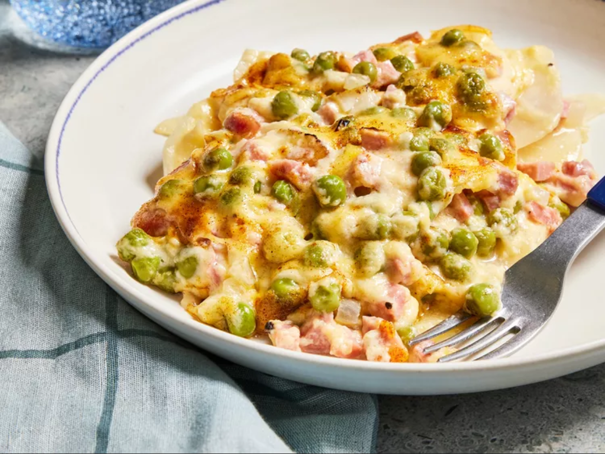

Back to Homepage
Cheesy Scalloped Potatoes with Ham

Description
Scalloped potatoes and ham are baked in a creamy sauce with a mild cheese flavor. The recipe is really easy and affordable. I have never had anyone not like this dish.
Ingredients
- 1 quart peeled and sliced potatoes
- 2 cups diced ham
- 1/2 onion, chopped
- 2 cups milk
- 1 cup frozen peas
- 3 tablespoons all-purpose flour
- 2 tablespoons butter
- 1 teaspoon dried parsley
- 1/2 teaspoon salt
- 1/2 teaspoon ground black pepper
- 1/8 teaspoon garlic powder
- 1/8 teaspoon onion powder
- 1/4 pound cheddar cheese, diced
- 1 pinch paprika, or to taste